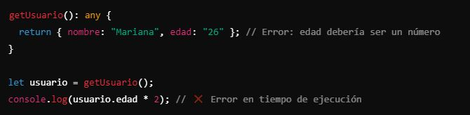
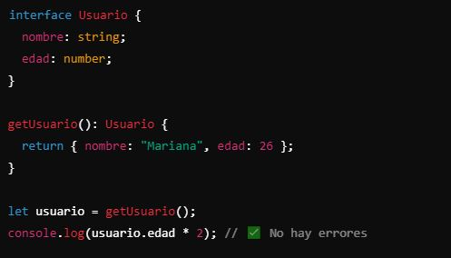

En Angular (y en TypeScript en general), el uso consciente del tipado de variables está directamente relacionado con varios principios de software que ayudan a mejorar la mantenibilidad del proyecto. Vamos a desglosarlo con algunos principios clave:
En Angular (y en TypeScript en general), el uso consciente del tipado de variables está directamente relacionado con varios principios de software que ayudan a mejorar la mantenibilidad del proyecto. Vamos a desglosarlo con algunos principios clave:
{{ topic.description }}
{{ type.type }}: {{ type.description }}
El tipado de variables nos ayuda a identificar y prevenir problemas de tipado en nuestro código. Por ejemplo:
En este caso TypeScript parará la ejecución cuando intente ejecutar el la operación matematica con un string y no con un number.
Lo ideal es realizar un tipado correcto, en este caso se generó una interface, la cual es una forma de definir la estructura de un objeto sin especificar su implementación.
